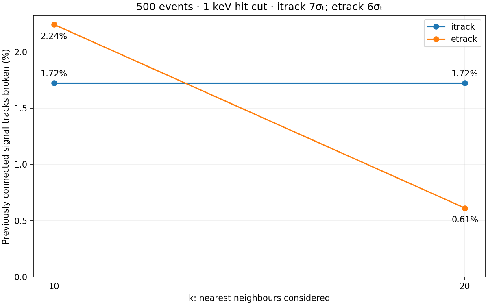

The same 380 signal tracks, connected before the cut at 6σₜ and k = 10.
| k | 6σₜ | 7σₜ |
|---|---|---|
| 10 | 12/380 (3.16%) | 4/380 (1.05%) |
| 20 | 12/380 (3.16%) | 4/380 (1.05%) |
Reference sample: signal-only tracks connected before the cut at k = 10. The denominator stays fixed.
| k | itrack | etrack |
|---|---|---|
| 10 | 7 / 406 (1.72%) | 11 / 490 (2.24%) |
| 20 | 7 / 406 (1.72%) | 3 / 490 (0.61%) |
| k | itrack: broken / initially connected | etrack: broken / initially connected |
|---|---|---|
| 10 | 7 / 406 (1.72%) | 11 / 490 (2.24%) |
| 20 | 8 / 409 (1.96%) | 3 / 492 (0.61%) |

Events with other than one connected component after the cut, divided by all 500 events.
| k | itrack | etrack |
|---|---|---|
| 10 | 328 / 500 (65.6%) | 20 / 500 (4.0%) |
| 20 | 328 / 500 (65.6%) | 11 / 500 (2.2%) |